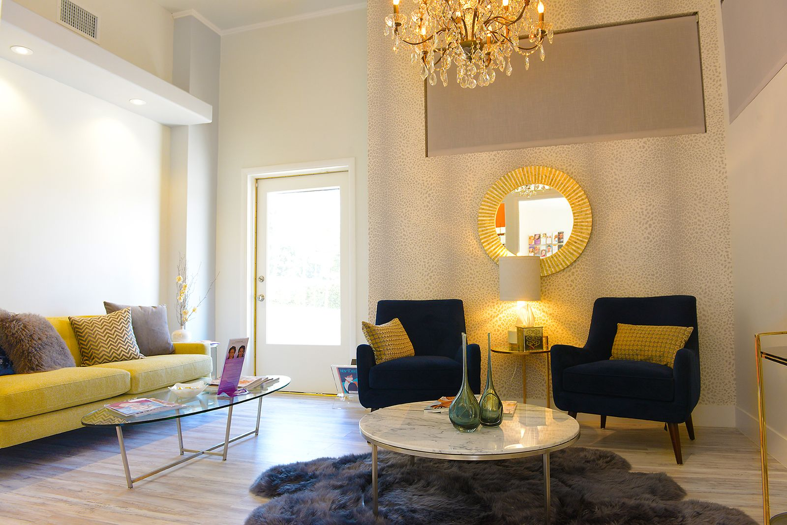
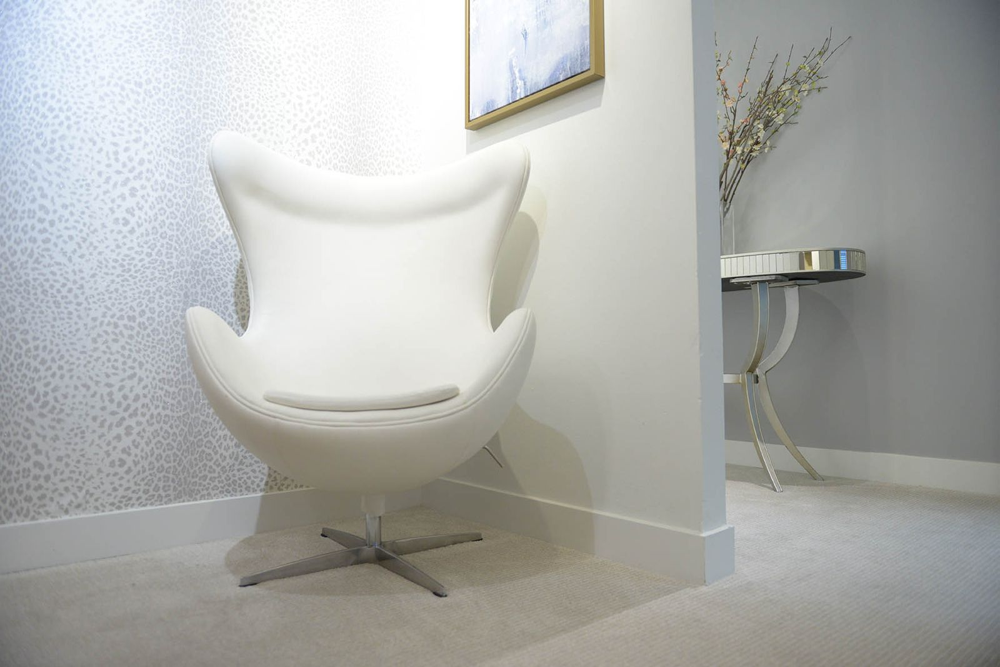
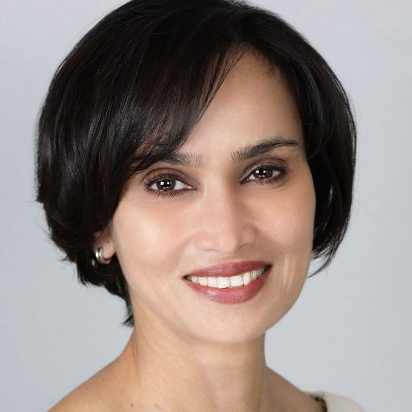
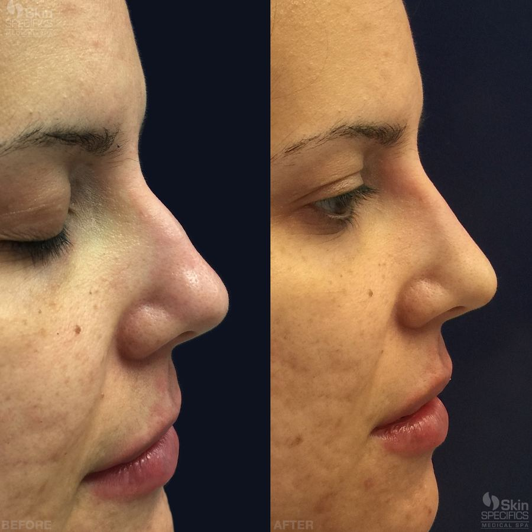
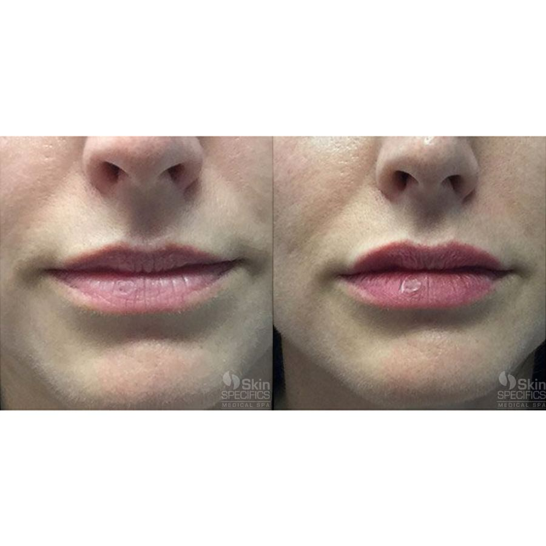
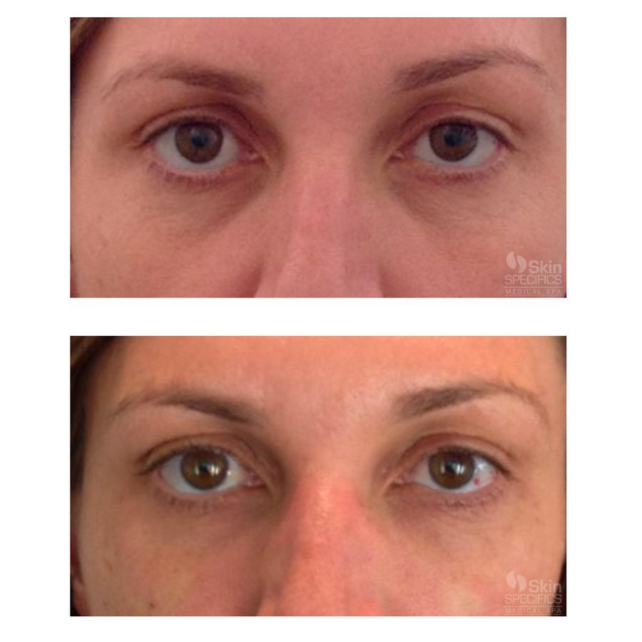
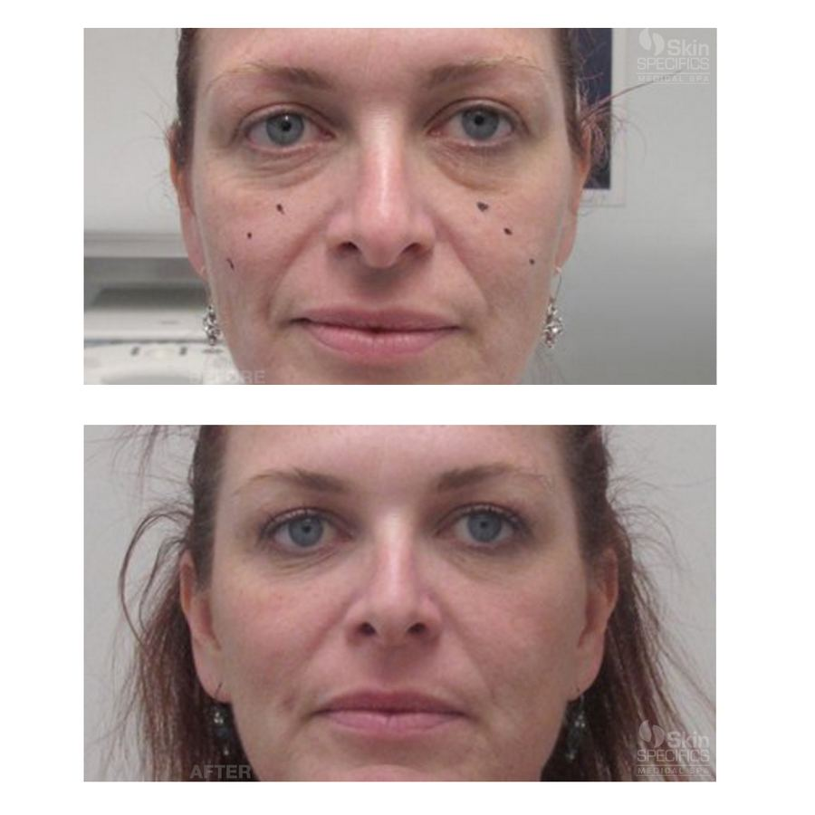
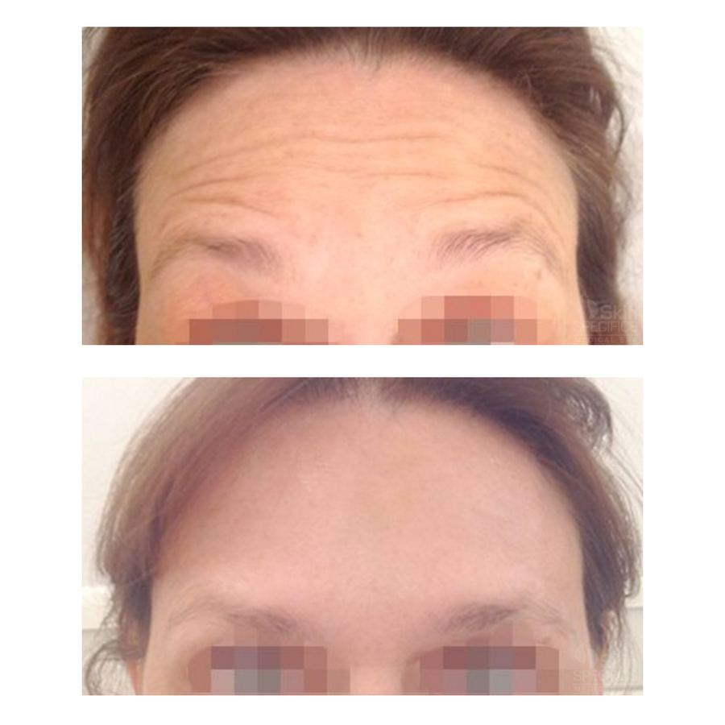
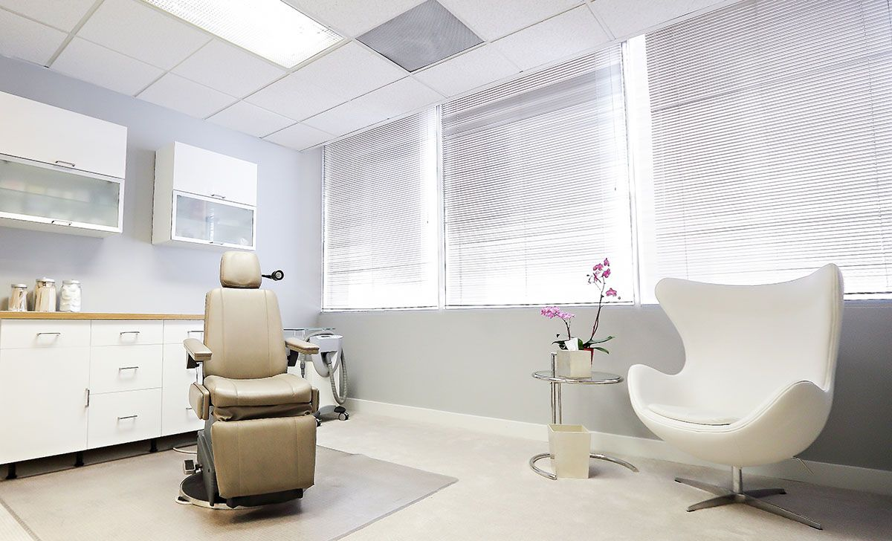

La Cañada Flintridge
1345 Foothill Blvd.La Cañada, CA 91011
Mon to Sat, 8:00 am to 6:00 pm
Advanced facial injection techniques from Anusha Dahanayake, NP, in West LA and La Cañada Flintridge since 2003.


“It’s not about folds and wrinkles, it’s about balance, harmony, and looking natural.”
Every treatment starts with a complimentary consultation and a plan built around the proportions of your face.
Volume that restores balance and proportion to the face.
Non-surgical changes to the shape and proportions of the face.
Results from Skin Specifics clients, with the treatment used for each.





“I was beyond impressed with the total experience. Anusha is a true pro with an exceptional bedside manner. I felt very well informed about the process and it didn’t hurt!”Mary C., March 2016
“Anusha’s expertise and gentle hands are the reasons I’ve been staying loyal for over 10 years now.”Nancy P., August 2015
“It was the first time I’ve been so relaxed getting Botox but I was in such capable hands…she was great!”Sue H., August 2015

Mon to Sat, 8:00 am to 6:00 pm

Mon to Sat, 8:00 am to 6:00 pm
Monday to Saturday in West LA and La Cañada Flintridge. Add online booking link